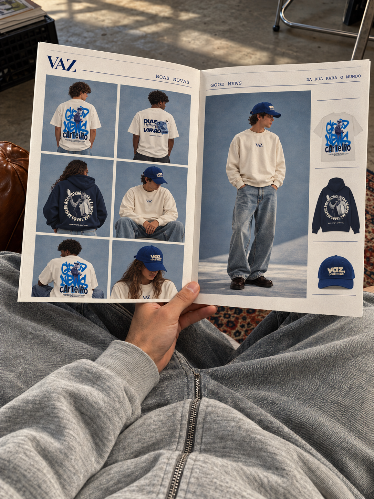

Nem toda boa notícia vira manchete. Algumas viram roupa.

Uma roupa que puxa conversa.
A VAZ aproxima roupas e histórias do cotidiano. Uma conversa que fica, uma frase que acompanha, um encontro que merece ser lembrado: é desse lugar que vêm as nossas boas novas.
A roupa entra como companhia. Nas estampas, palavras e imagens abrem espaço para compartilhar o que faz bem. No caminho, cada pessoa dá um novo sentido à mensagem.
Antes de virar roupa, vira conversa.
Gostamos de uma roupa que puxa assunto. De uma frase que alguém lê e leva consigo. A VAZ transforma essa vontade em peças que acompanham a vida e deixam uma mensagem pelo caminho.
É desse jeito que queremos apresentar a VAZ: próxima, aberta e com assunto para compartilhar.
Uma mensagem, muitos caminhos.
Good News. Dias Melhores Virão. Para Sempre Boas Novas. A coleção reúne jeitos diferentes de vestir a mesma ideia: fazer o que é bom circular.
Camisetas, moletons e bonés dão forma a essa história. Nas páginas e nas peças, as palavras ganham outros caminhos.
As boas novas também moram nos detalhes: uma conquista pequena, uma amizade que chegou, uma conversa que mudou o dia. Nosso mural é um convite para guardar essas mensagens.